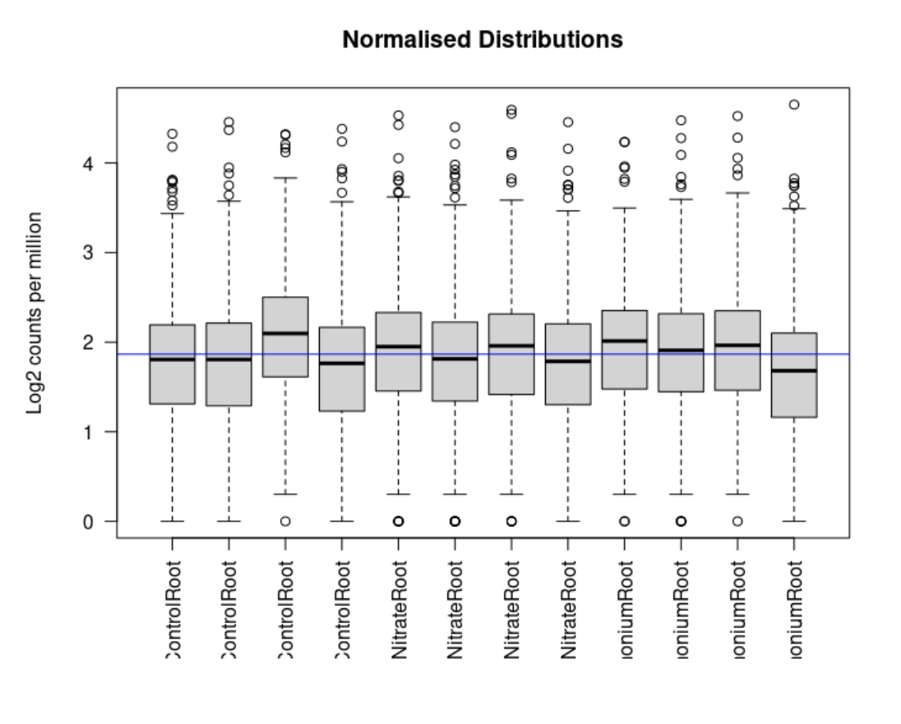
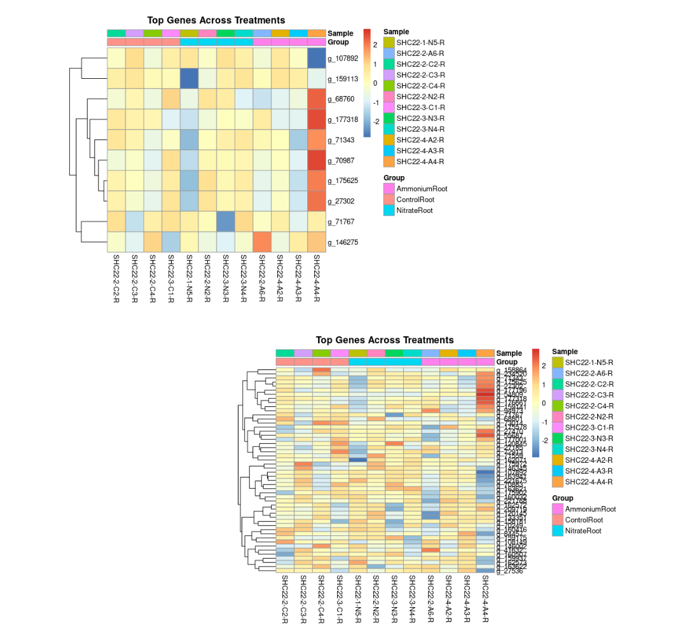
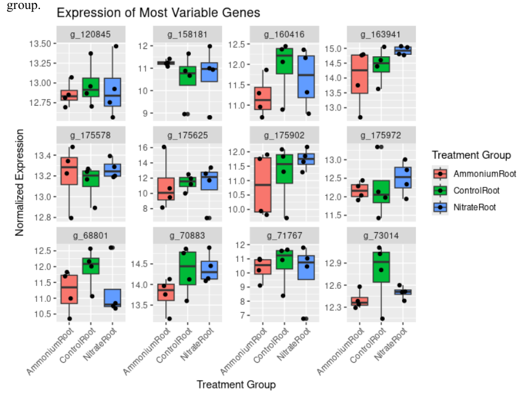

Genetic Expression of Salicornia Depressa in Nitrate vs Ammonium Treatments
1 - Background and Context
Salicornia depressa is a plant found in salt marshes. It exhibits unique adaptations that make it resistant to saline and various nutrient environments. Understanding how it responds to different nitrogen sources such as ammonium and nitrate can shed light on its nitrogen cycle and give us insights into how it can be used for ecological restoration and pollution control. This analysis project is part of a broader investigation into how varying nitrogen availability impacts root development and gene expression. The samples analyzed in this study include RNA-Seq data from Salicornia depressa primarily focusing on roots exposed to nitrate, ammonium, and control treatments. This analysis aims to identify genes most influenced by nitrogen sources, utilizing transcript data, salmon pipelines, and R.
2 - Methods
2.1 Research Question
How do different nitrogen sources (nitrate, ammonium, and control) affect gene expression in Salicornia depressa roots?
2.2 Starting Data
RNA-Seq data derived from Salicornia depressa roots, flora, and vegetation subjected to nitrate, ammonium, and control treatments was sequenced using NovaSeqX. All initial data was produced and provided by Prof. Brook Moyers and her group:
- The resulting interleaved RNA-Seq files.
- Metadata about these samples and a few more was provided in an Excel file (rnaMetaBars.xlsx).
- The transcriptome was provided in a fasta file. (gene.features.fasta)
- GFF3 file containing annotations of the transcriptome.
2.3 Pre-Processing
Indexing: Start by building an index on the transcriptome using salmon. Salmon uses the index to "quasi-map" RNA-seq reads.
salmon index -t gene.features.fasta -iQuantification: Now that we have the index of the transcriptome, we are ready to quantify the samples. However, because salmon does not natively support interleaved FASTQ files, we must use the provided runner.sh script with every sample being quantified. This essentially de-interleaves each FASTQ file just before feeding it to the salmon quant command.
# Path to the Salmon index
index="decoys.txt.bak"
# Loop through metadata file and process all FASTQ files
for file in interleaved_fastq/*.fastq; do
sbatch scripts/runner.sh salmon quant --interleaved "$file" -p
4 -i gene_features_index -l A -o "out/${file%.fastq}"
done2.4 Analysis Workflow
With the index, quantification, GFF3 annotation, and metadata at hand, we are ready to start analyzing with R. Here I will be highlighting the most relevant parts.
Loading Data: Loading metadata and filtering samples for target groups (NitrateRoot, ControlRoot, AmmoniumRoot).
sample_info <- read_excel("rnaMetaBars.xlsx") target_groups <- c("NitrateRoot", "ControlRoot", "AmmoniumRoot") sample_info <- sample_info[sample_info$groupName %in% target_groups,]Loading quantification files paths filtered by target groups.
quant_files <- list.files("out/interleaved_fastq", pattern="quant.sf", recursive = TRUE, full.names = TRUE) quant_files <- quant_files[quant_files %in% sample_info$fileUsed]Transcript-to-Gene Mapping: Generating a transcript-to-gene map using the GFF3 file.
txdb <- txdbmaker::makeTxDbFromGFF("long.gff3") tx_map <- AnnotationDbi::select(txdb, keys = keys(txdb), columns = c("GENEID", "TXCHROM", "TXSTART", "TXEND"), keytype = "GENEID") tx_map$TXCHROM <- paste0(as.character(tx_map$TXCHROM), ":", tx_map$TXSTART - 1, "-", tx_map$TXEND) tx_map <- tx_map[, c(2, 1)] # TXCHROM vs GENEIDCount data into R and collapse the data to the gene level: Custom_importer function was implemented to address mismatched Name formats.
txi <- tximport( files = quant_files, type = "salmon", tx2gene = tx_map, importer = custom_importer)Differential Gene Expression Analysis: Constructing a DESeq2 dataset for normalization and statistical testing. With the design parameter we can specify what we are interested on (groupName, e.g. "NitrateRoot").
dds <- DESeqDataSetFromTximport( txi, colData = sample_info, design = ~ groupName)- "We can use the vst function from DESeq2to compensate for the effect of different library sizes and put the data on the log2 scale. The effect is to remove the dependence of the variance on the mean, particularly the high variance of the logarithm of count data when the mean is low. For more details see the DESeq2 vignette" Quote Source.
vsd <- varianceStabilizingTransformation(dds, blind=TRUE)Visualizing Results: Creating boxplots to examine raw and normalized distributions.
boxplot(
log10(assay(dds)),
xlab="",
ylab="Log2 counts per million",
las=2,main="Normalised Distributions",
names = sample_info$groupName)
abline(
h=median(log10(assay(dds))),
col="blue")
Generating a heatmap of the top 10 most variable genes across treatments.
# get top variable genes
row_vars <- apply(normalized_counts, 1, var)
top_genes <- names(sort(row_vars, decreasing=TRUE))[1:10]
top_counts <- normalized_counts[top_genes, ]
# plot heatmap
pheatmap(top_counts,
annotation_col = annotations,
labels_col = annotations$Sample,
show_rownames = TRUE,
cluster_cols = FALSE,
scale = "row",
main = "Top Genes Across Treatments")Visualizing expression of the most mean variable genes using ggplot2.
# Plot most variable genes
row_mad <- apply(txi$counts, 1, mad)
top_20_genes <- names(sort(row_mad, decreasing=TRUE))[1:12]
ggplot(
filter(plot_data, gene %in% top_20_genes),
aes(x = Group, y = expression, fill = Group)
) +
geom_boxplot() +
geom_point(
position = position_jitter(width = 0.2),
) +
theme(
axis.text.x = element_text(angle = 45, hjust = 1),
) +
facet_wrap(
~gene,
scales = "free_y",
ncol = 4
) +
labs(
title = "Expression of Most Variable Genes",
x = "Treatment Group",
y = "Normalized Expression",
fill = "Treatment Group"
)3 - Results
Using the aforementioned methods, we are able to visualize our results and draw conclusions from our data. Looking at the first box plot we can see that all twelve FASTQ files express around the same number of total genes. Overall, we can assume that difference in treatment does not hugely impact total number of gene expressions.
Naturally, the next question is to find which genes do change the most with different treatments. This is when we use a heatmap to find the most and least expressed genes. Although there are a few overrepresented (red cells) and underrepresented (blue cells) genes, they do not seem to be consistent across different samples within the same treatment group. Or perhaps the rightmost sample SHC22-4-A4-R is an outlier that smooths the heatmap making it hard to tell.
To overcome the potential skewing issue, I lastly plotted the genes in individual box plots. That way, the y axis adapts to the mean across treatment groups for the specific gene, making it more robust against outliers. Now we can see the differential expressions better, and notice genes such as g_163941 (top right), g_73014 (bottom right), g_70883 (bottom left), g_158181 (top right), which are consistently expressed differently across samples of the same group.
Our results highlight genes that are consistently expressed differently across treatment groups. This is a step towards discovering how salicornia can be optimally used as an ecological shield to our salt marshes through different nitrogen sources.
4 - References
- BLOOM, A.J., JACKSON, L.E. and SMART, D.R. (1993), Root growth as a function of ammonium and nitrate in the root zone. Plant, Cell & Environment, 16: 199-206. https://doi.org/10.1111/j.1365-3040.1993.tb00861.x
- Johnson, D.S., Warren, R.S., Deegan, L.A. and Mozdzer, T.J. (2016), Saltmarsh plant responses to eutrophication. Ecol Appl, 26: 2649-2661. https://doi.org/10.1002/eap.1402
- Bloom, A.J., Meyerhoff, P.A., Taylor, A.R. et al. Root Development and Absorption of Ammonium and Nitrate from the Rhizosphere. J Plant Growth Regul 21, 416-431 (2002). https://doi.org/10.1007/s00344-003-0009-8
- Dunning, Mark. RNA-Seq Analysis in R, Feb. 2020, sbc.shef.ac.uk/RNAseq-R/rna-seq-preprocessing.nb.html
- Patro, Rob. "Getting Started - Salmon: Fast, Accurate and Bias-Aware Transcript Quantification from RNA-Seq Data." Salmon: Fast, Accurate and Bias-Aware Transcript Quantification from RNA-Seq Data, 2023, combine-lab.github.io/salmon/getting_started/#obtaining-salmon